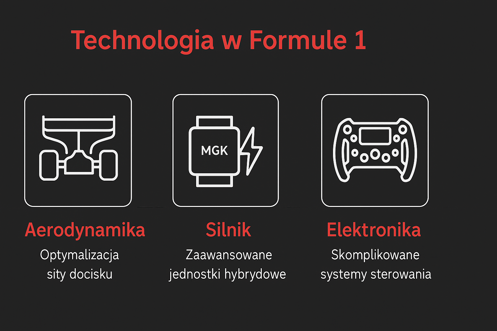

Technologia i regulacje
Technika, która decyduje o zwycięstwie... Współczesne bolidy F1 to najbardziej zaawansowane samochody wyścigowe na świecie. Hybrydowe jednostki napędowe z systemami odzyskiwania energii, aktywne elementy aerodynamiczne jak DRS, oraz setki czujników analizujących każdy milimetr jazdy – wszystko to tworzy złożoną maszynę, która działa na granicy możliwości fizyki.  W jednym sezonie zespoły mogą wprowadzać dziesiątki poprawek do bolidu, analizując dane z telemetrii w czasie rzeczywistym. Pracownie inżynieryjne zespołów przypominają laboratoria NASA – wykorzystuje się w nich sztuczną inteligencję, modelowanie CFD oraz druk 3D. Bez tej technologii – żaden kierowca, nawet najlepszy – nie byłby w stanie wygrać wyścigu.